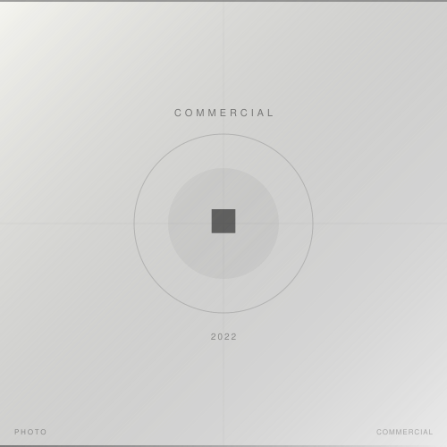

2022 / COMMERCIAL / MEDIA
Amazon Audible「みんなのメンタールーム」ポッドキャスト スチール撮影
Amazon Audible Japan
Amazon JapanのAudibleが展開するポッドキャスト番組「みんなのメンタールーム」（出演：設楽悠介、野村高文）のスチール撮影を担当。番組のビジュアルアイデンティティとなるポートレート写真を制作。
担当：スチール撮影 / ライティング設計 / デジタル現像
Leica SL2, APO-SUMMICRON-SL 75mm f/2 ASPH.
- Photographer
- 森川亮太 (M.RYOHTA / @m_ichirinka)
- Client
- Amazon Audible Japan
- Cast
- 設楽悠介 / 野村高文
Amazon Audible / Instagram: @m_ichirinka (2022.09.01) ↗
